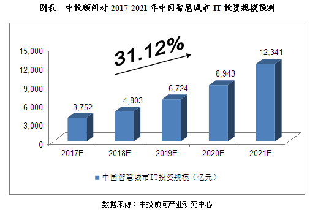
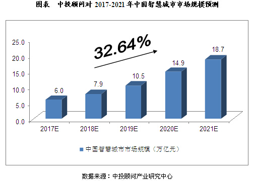

导读： 2014年，我国智慧城市IT投资规模达2，060亿元，较2013年同期增长17．0％；2015年，我国智慧城市IT投资规模达2，480亿元，较2014年同期增长20．4％。
（一）数字城市技术的支持 数字城市技术能将基础地理数据、正射影像数据、街景影像数据、全景影像数据、三维模型数据、专题数据等各类数据按照地理位置在数字城市里进行整合，通过面向服务的架构，把各类空间和属性数据通过网络服务发布并提供给用户。各类用户通过网络注册共享自己的信息，并以服务的形式在数字城市地理空间框架平台上进行发布，政府、行业和公众等各类用户都通过网络方便地获取交通、旅游、医疗、教育、应急等相关服务。数字城市技术能在空间技术上对智慧城市的发展给予基础性支持。
（二）物联网技术的支持 物联网能实现人与人、人与机器、机器与机器的互联互通，各类型的传感器能通过各类有线和无线网络为用户提供固定、游牧和移动式无所不在的应用和服务。物联网技术的发展在智慧城市发展中能在市政管理智能化、农业园林智能化、医疗智能化、楼宇智能化、交通智能化、旅游智能化及其他应用智能化等方面起到基础技术支持的作用
（三）云计算技术的支持 云计算能够支撑信息服务社会化、集约化和专业化，云计算中心通过软件的重用和柔性重组去进行服务流程的优化与重构，能提高利用率，促进软件之间的资源聚合、信息共享和协同工作，形成面向服务的计算。云计算还能够快速处理全国的海量数据，并同时向上千万的用户提供服务。基于云计算技术，建立从基础设施、数据、平台到服务的一体化的时空信息云平台，将空间大数据、视频大数据以及各类应用中的大数据进行有效管理，并按照实际需求进行处理、存储、管理，并提供相应服务，能够满足交通、物流、城市管理、旅游、安防、应急等各行业和城市综合的智慧应用，推动智慧城市的完善和发展。
（一）智慧城市建设缺乏顶层设计和统筹规划 国内各试点智慧城市的建设应是合作互补而非竞争关系，相应规划也要在整体布局下分担不同内容，立足于自身层级与区域的比较优势，因不同的地方而异，避免千篇一律。但以目前国内的情况来看，智慧城市建设暴露出缺乏顶层设计和统筹规划，区域内城市、城镇、社区规划单一，建设思路与方向趋同，未能发挥合作互补作用，这样不利于资源的优化配置，易造成资源重复浪费现象。智慧城市建设的一项重点内容是融合不同部门、不同领域的信息，使公众和城市的管理者对数据与信息有科学、完整的认识和判断。而当前多数试点都有自己的建设规划，更不用说试点内的教育、医疗、交通等部门也有自己的规划，进而各自为政、独立开发信息系统，加上缺乏统一标准以及不同软件供应商的应用程序兼容等问题，很容易造成“信息孤岛”现象，从而降低城市运作的效率和公众体验的舒适度。因此，各试点应加强精细化、特色化、差异化的城市建设规划，解决本地居民最迫切需要解决的问题。
（二）国内信息开放程度不足，未能迅速打开横向网络 目前，很多省发改委经济信息中心都已初步建成数字化云端，也就是说，硬件基本配备完毕，但各政府部门间不愿公开、分享数据，导致我国智慧建设的一个瓶颈就是“信息孤岛”的问题。在实际中，解决交通拥堵需要车辆和道路数据；提高政务服务水平需要民生反馈数据；医疗资源的合理配置需要医疗和人口数据；一项新政策的实施，甚至需要多行业的数据配合。因此，没有数据之间的共享，就没有办法让数据产生深度价值和综合价值，也就难以实现智慧城市的发展。此外，因为目前政府部门有各自独立的垂直信息系统，所以也存在着数据不统一、标准化程度不高、互联互通程度不足、部门各自为政的现象。 （三）群众参与感不强，未能打通联系群众的最后一公里
目前的智慧城市建设多是从供给端出发，通过供应商提供后台产品和应用，以政府服务平台得以展现，真正能够连接到“服务接受者”的“智慧”种类并不多。从对各省内部分政府公务员与事业单位工作人员的抽样调查来看，多数公务人员都对智慧城市建设的现状与相关信息了解甚少。对智慧城市建设来说，公务人员既是智慧服务的“接受者”也是智慧服务的“提供者”，对智慧城市建设的参与和了解是非常有必要的。目前这种缺乏“地气”的现状亟待改善。此外，智慧城市不仅意味着硬件的完善，更要求该地居民IT素质、环保意识、城市创新能力、人才吸引力等软性综合实力的提升。因此，要注重城市人才的培养，要积极引导院校和企业关注大数据技术演进、承担关键技术和系统的创新研发工作，以创新技术的推广应用带动智慧城市产业链集聚和发展。

2017－2021年中国智慧城市IT投资规模预测
2014年，我国智慧城市IT投资规模达2，060亿元，较2013年同期增长17．0％；2015年，我国智慧城市IT投资规模达2，480亿元，较2014年同期增长20．4％。
综合以上因素，我们预计，2017年我国智慧城市IT投资规模将达到3，752亿元，未来五年（2017－2021）年均复合增长率约为31．12％，2021年IT投资规模将达到12，341亿元。
